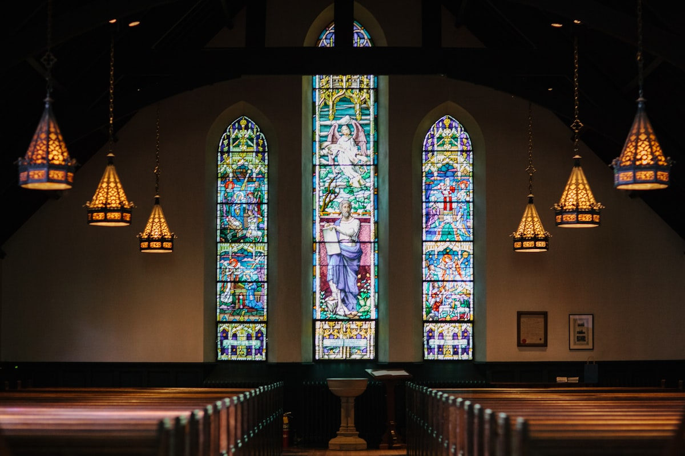

Time: 11AM EST
Join worship, prayer, and fellowship online from wherever you are in the world.
Join Us NowThe Way Maker Fellowship Church
A global online church proclaiming grace
Experience the Grace of God. Encounter Transformation
A global online church family helping people experience God’s grace, discover purpose, and make a difference through Jesus Christ.
Service Details
Wherever you are in the world, join our Sunday Service and Bible Study.
Join worship, prayer, and fellowship online from wherever you are in the world.
Join Us NowTime: 2PM EST
Connect with us for Bible Study and growth in the Word of God.
Live Church
Services and messages are available online through YouTube and digital platforms so anyone, anywhere in the world can attend.
Our Foundation
The Way Maker Fellowship Church exists to help people encounter the finished work of Jesus Christ and live empowered by His grace.
To see people in every country awakened to the finished work of Jesus Christ, living in the freedom of God’s grace and expressing the life of Christ through a vibrant global online community.
To proclaim the Gospel of God’s grace, help believers discover their true identity in Christ, nurture authentic community, and equip people everywhere to live from Christ’s fullness within them.
To help people encounter God’s unconditional love, understand what Jesus accomplished through the cross, grow in their identity in Christ, and impact the world by His grace.
Live Ministry Infographic
This live dashboard updates on the website to show the movement and structure of the ministry in real time.
Senior Leadership
Our leadership is committed to preaching the Word, shepherding with wisdom and compassion, and raising believers who walk in faith, identity, and purpose.
Senior Pastor · Servant of God · Preacher of the Word
Pastor Chester Misaki is an evangelist at heart and a faithful proclaimer of the Good News from both the Old and New Testaments, with a deep passion for exposing the Grace of God.
He previously served with the United Nations, including as Chief of Budget and Finance in MINURSO, Western Sahara, Morocco, and has helped grow the Body of Christ across Kenya, Kosovo, Morocco, Kuwait, the United States, and Canada.
Pastor’s Wife · Intercessor · Encourager
Minister Isabella Misaki serves faithfully alongside Pastor Chester and the church leadership. She loves the Word of God, intercession for the nations, and encouraging believers in their walk of faith.
She has served internationally and, together with Sister Roselyne, helps spearhead the intercessory arm of the church.
Coordinator of Services · Senior Admin
Minister Marilyn Pillai is a servant of Christ with a heart for prayer, teaching the Word of God, and encouraging believers to grow in the grace and knowledge of Jesus Christ.
Since TWMFC’s launch in August 2024, she has served in preaching, prayer, spiritual encouragement, coordination, and administration across nations.
Core Ministries
Join a ministry group, serve, pray, grow, and become part of the TWMFC family.
Sermons & Teaching
Sunday teachings, weekly Bible studies, and special messages expose you to the grace of God, strengthen your faith, reveal God’s promises, and equip you for daily victory.
Messages focused on grace, healing, restoration, and divine direction.
Watch on YouTube →Practical teaching that helps believers discover and embrace their identity in Christ.
Open Bible studies →Encouragement, prayer, restoration, and faith-building messages for every season.
Subscribe @TWMFC →Church Gallery
Enjoy a peaceful visual space with church backgrounds, worship moments, prayer, the Word, and global fellowship inspiration.

Soft Worship Atmosphere
Tap play to hear a gentle ambient worship pad while browsing the site. It stays soft and peaceful.
Testimonials
“At TWMFC, we’ve seen firsthand that God still makes a way — healing hearts, restoring families, and opening doors where none seemed possible.”
— The Way Maker Fellowship ChurchPrayer & Counselling
Our intercession ministry stands in the gap for prayer requests, believing God for healing, restoration, and breakthrough.
Giving
Your generosity helps share the Gospel of Jesus Christ, transform lives through teaching and worship, and serve communities with compassion and outreach.
PayPal Giving
Give securely through the official PayPal donation account scanned from the church offering QR code.Give with PayPal551 330 6121
Send free will offerings through Zelle using the church telephone number.Pay Bill 222111
Account: 034000005078Partners
We collaborate with ministries and organizations that share our mission of advancing the Gospel, serving communities, and empowering lives through faith.
FAQ
Contact
Reach us for prayer, counselling, giving support, partnership, service information, and fellowship.
{kind=link}